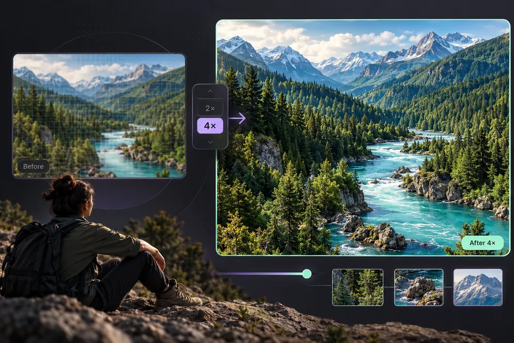

Enlarge and sharpen photos without a paid AI API
Upload a picture, choose 2×, 3× or 4× enlargement, and fine-tune sharpening, clarity and noise reduction. Everything runs directly in your browser. No registration, paid credits or cloud processing.
This tool uses browser interpolation and image-processing filters, not a trained neural-network AI upscaler. It can make pictures look clearer, but it cannot accurately recreate information missing from the original.
How to upscale an image
1. Choose your image
Upload a PNG, JPG, WebP or another browser-supported picture up to 35 MB. Files are processed only on your device.
2. Select an upscale factor
Choose 2×, 3×, or 4×. A maximum processed output of 16 megapixels protects browsers and mobile devices from memory overload.
3. Adjust enhancement
Use sharpening for edge definition, clarity for contrast around detail, and noise reduction for grain or speckling. Gentle settings usually look more natural.
4. Download the result
Select PNG, JPG or WebP. The editor creates a new file; your original photo is not overwritten.
Frequently asked questions
Is this a real trained AI model?
No. The current LOOX upscaler uses high-quality canvas scaling, sharpening and denoising; it is a free local image enhancer.
Can I make blurry photos clearer?
Sharpening and clarity can improve apparent definition, but heavily blurred or tiny images cannot have their lost detail restored accurately by these filters.
Are my photos uploaded?
No. Images are processed in your browser, and the results are downloaded directly to your device.